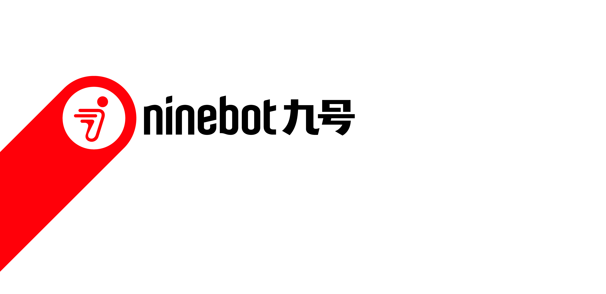

Intro Motion Proposal
智能
Precision Lane
A line is drawn, thickens into the band, and the symbol locks into place with one clean stop.
GoSmart Thinking
The symbol breathes like an assistant thinking, then the wordmark is typed out like a reply.
GoSmart Reveal
The symbol appears first, and the band and wordmark grow out of it in one smart move.
GoPrecision Lane
A single lane is drawn at 45 degrees, thickens into the band, and the symbol locks into place with one clean stop. Nothing overshoots and nothing decorates. Every element moves once and lands exactly where it belongs, the way a well made mechanism does. The logo does not perform. It arrives, controlled and calm.
Smart Thinking
The symbol appears alone and breathes softly, the way an assistant pauses to think. A cursor blinks beside it. Then the answer comes: the circle and the band lock in, and the wordmark is typed out letter by letter, like a reply. The logo is not revealed. It answers.
Smart Reveal
The symbol comes first. It appears at the centre of the frame, and the rest of the logo grows out of it: the band extends from the circle, and the wordmark unfolds from the band into place. One source, one smart move, and the full logo is there. Nothing is placed from outside. Everything is derived from the symbol.
奇妙
Bouncy Road
The band is the road and the circle is the rider. The circle bounces along the band into frame, squashes on each landing, and the band stretches behind it like a tail before the wordmark pops in letter by letter. Spring easing and a touch of overshoot give the logo weight and bounce, so it feels light, friendly and alive.
Smooth Drive
The band is the road and the circle is the wheel. The logo rolls in along its own track from the lower left, leans into the turn the way a rider does, and settles with a soft, springy landing. The wordmark drifts in like a breeze. Warm easing, a little lean, a little sway. Not precise, easy. The small pleasure of a ride that simply goes well.
年轻
Fast Lane
The band sweeps across the frame in one fast diagonal, brakes hard as the circle catches it, and the logo snaps in on the recoil with a short flash of white. Fast in, hard stop. Motion blur on the way in, nothing but the logo once it stops. Speed you can feel in half a second.
Young Luxe
A black frame. A thin line of light runs along the edge of the band, the way studio light slides over a car body. The symbol surfaces out of the dark as the light passes, then the wordmark, sharp and quiet. No bounce and no flash. Vibrant here is confidence: dark, glossy and sure of itself. Luxury the way a new generation wears it.